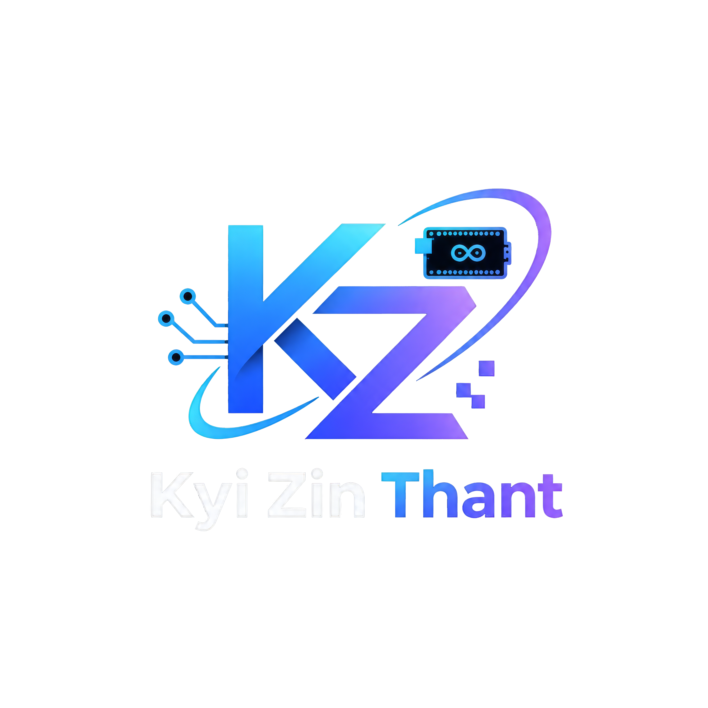

BUILDING MY IT CAREER — FOCUSED ON SOFTWARE ENGINEERING, TESTING, AND PROBLEM SOLVING
Software & Test Engineer
I studied Economics in Myanmar before coming to Japan, where I studied Information Processing at a vocational school. After graduating, I started my career in IT and currently work as an engineer through a staffing company, assigned to a Honda R&D project via Veriserve. My current work focuses on automotive navigation image verification, test operations, test tool improvement, and Python-based efficiency tools. With my background in both economics and IT, I am continuing to develop my technical skills and build my career as an IT engineer.
Setup and configuration of Linux servers, permissions, and backups.
Python scripting to accelerate routine tasks and data processing.
Navigation image verification and test operations.
Designing efficient data structures and securing data access.
Set up a complete server environment using Linux. Wrote Bash scripts to automate backup processes, monitor server performance, and manage user permissions securely.
Utilized Python to interact with various APIs, extracting and processing data automatically, significantly reducing manual data entry time.
Assigned to a Honda R&D project via 株式会社ベリサーブ. Focused on automotive navigation image verification, executing test operations, and continuously improving test tools using Python scripts.
Designed and built relational (SQL) and non-relational (NoSQL) databases for web applications. Focused on optimizing queries and logical table structuring.